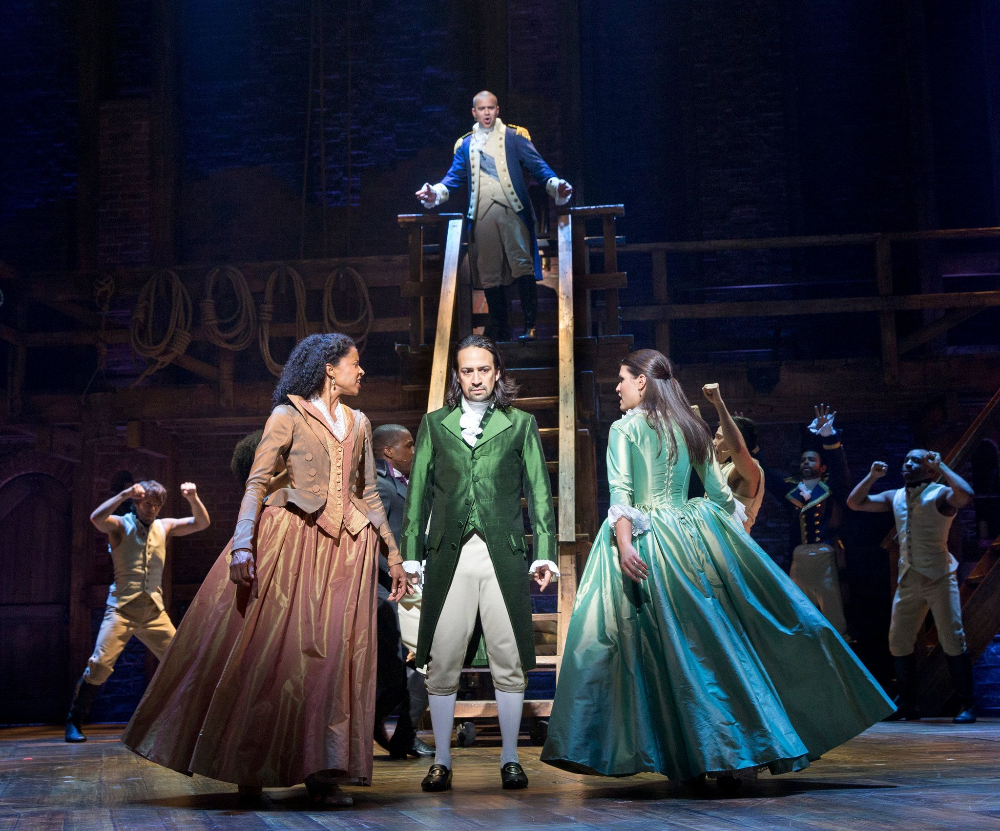

Hamilton: Uma Jornada de Amadurecimento e Desafios
Por Gretzel Kattia - 6 de março de 2024
O magnífico espetáculo "Hamilton", criado pela genialidade de Lin-Manuel Miranda, proporciona uma visão envolvente das vidas dos personagens históricos que moldaram os Estados Unidos. Nessa fascinante narrativa, cada personagem é confrontado com desafios monumentais, vivenciando uma transformação notável ao longo da trama.
No papel central, Hamilton inicia sua jornada como um jovem imigrante órfão, determinado a inscrever seu nome na história. Ao enfrentar adversidades como a guerra revolucionária, a criação do sistema financeiro e batalhas pessoais, seu amadurecimento se revela na compreensão das repercussões de suas ações e nas complexas relações interpessoais, especialmente na reconciliação com Aaron Burr.
Inicialmente apresentado como o antagonista de Hamilton, Burr embarca em uma jornada complexa. Sua busca incessante por poder o conduz a escolhas difíceis, culminando no fatídico duelo com Hamilton. O amadurecimento de Burr está entrelaçado com uma profunda reflexão sobre a importância da integridade e valores, moldando sua abordagem diante de desafios políticos e pessoais.
A esposa de Alexander, Eliza, enfrenta desafios pessoais e trágicos, incluindo a perda de seu filho Philip. Sua trajetória é marcada por uma resiliência inspiradora, dedicando-se incansavelmente à preservação do legado de Hamilton após sua morte. O amadurecimento de Eliza se manifesta na força emocional que a impulsiona, demonstrando uma notável capacidade de perdoar, mesmo diante de adversidades.
Angelica, irmã mais velha de Eliza, é uma personagem complexa e perspicaz. Envolvida em uma relação intricada com Hamilton, ela enfrenta o dilema entre seus sentimentos pessoais e o compromisso com a família. Seu amadurecimento se evidencia na compreensão das prioridades e na busca por sua própria felicidade, afastando-se das convenções sociais que a cercam.
Introduzido mais tarde na trama, Thomas Jefferson representa um desafio político substancial para Hamilton. Sua evolução é marcada pela transição de embaixador na França para líder político nos Estados Unidos. Enfrentando desafios ideológicos, Jefferson contribui para a construção da nação, mesmo em desacordo com Hamilton em vários aspectos.
Além desses personagens centrais, figuras como George Washington, James Madison e John Laurens desempenham papéis igualmente cruciais na trama, cada um enfrentando desafios históricos e pessoais que enriquecem a narrativa com sua complexidade e amadurecimento ao longo do musical "Hamilton". Embarque nessa jornada histórica e emocional, onde a teia de personagens se entrelaça de maneira magistral, conduzindo-nos por um espetáculo memorável.